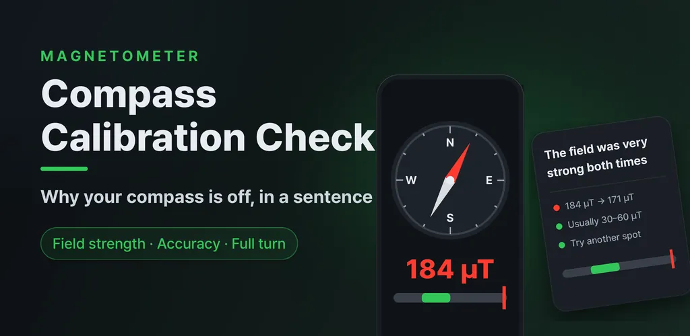
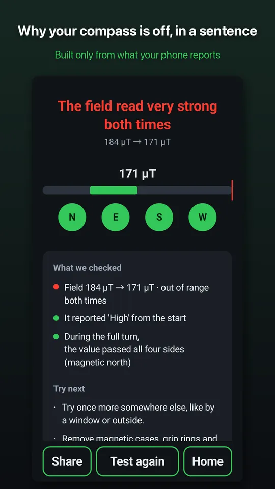
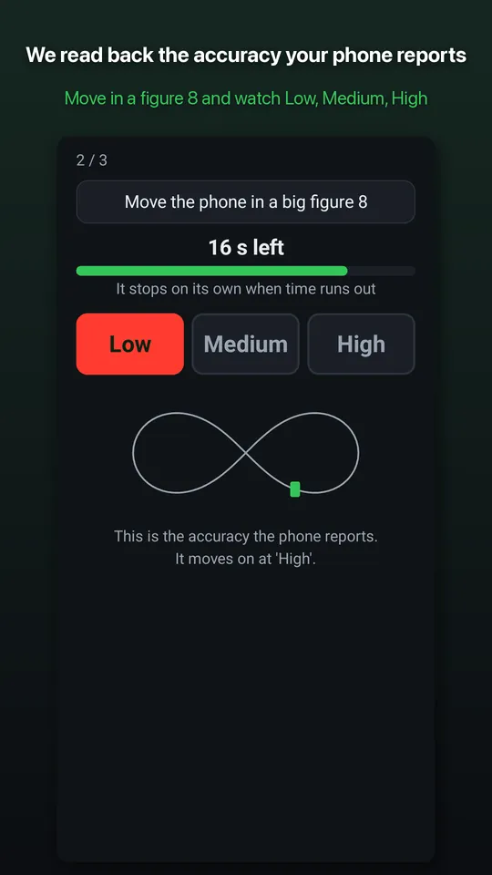
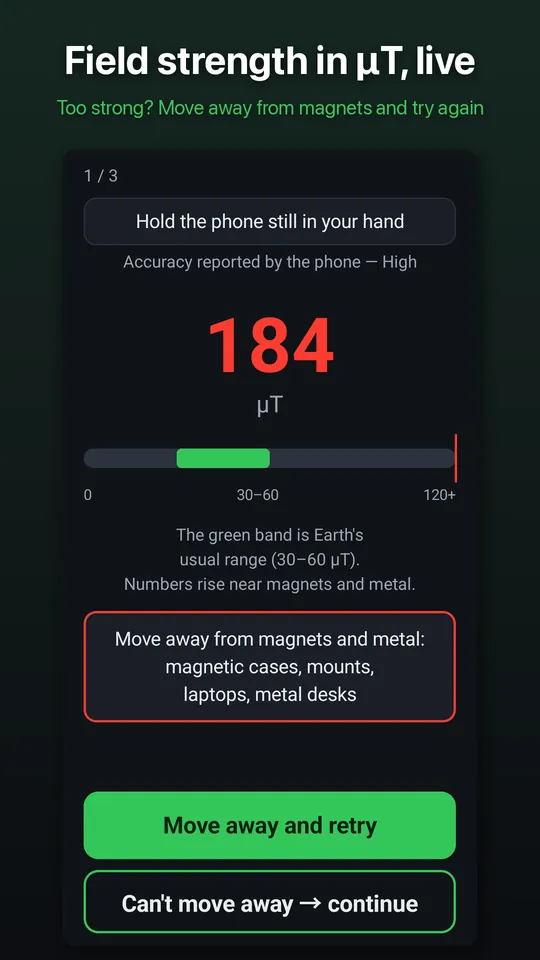
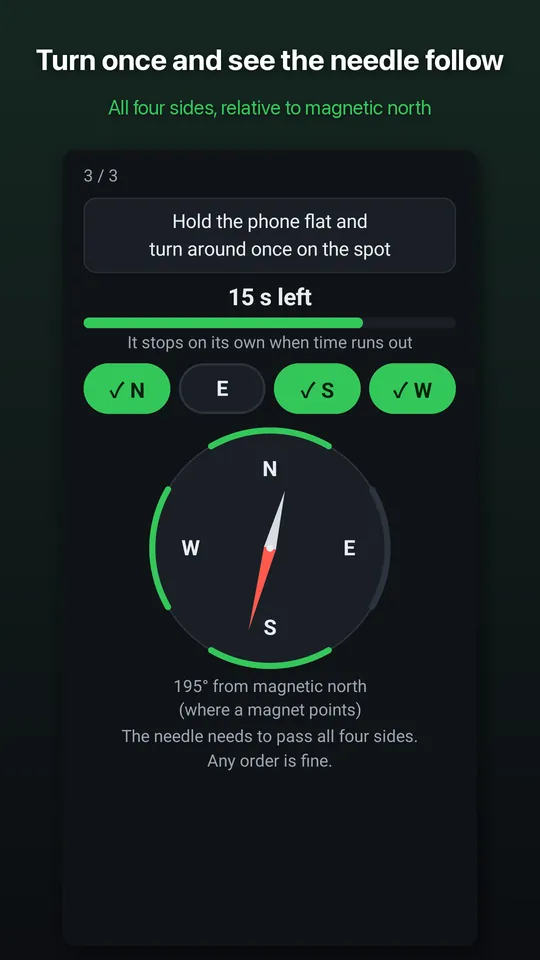
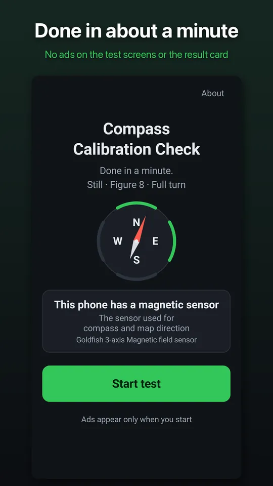

Compass Calibration Check
Magnetometer sensor test — field strength (µT), accuracy level, full-turn check






About this app
Is the arrow in your maps app pointing the wrong way, or does your compass feel off? Did it start after you added a magnetic case?
Compass Calibration Check runs your phone's magnetometer through three quick steps in about a minute, then tells you what it saw in one sentence and a result card.
- How it works
- Hold still and measure the field. We read the magnetic field strength (µT) around you and see if it is in Earth's range
- Move in a figure 8. We watch whether the accuracy level your phone reports climbs up to "high"
- Turn once around. Holding the phone flat, we check that the compass reading follows north, east, south and west
- What the app does and does not do
This app does not calibrate anything. Your phone does that. The app reads back the accuracy level your phone reports while you move it in a figure 8.
Even when the level says "high", the app cannot tell whether north is right. Compare with the arrow in your maps app.
- One sentence and a result card
We only write what we saw: "The field was very strong both times", "The reading didn't follow the turn both times", or "We found nothing big".
One miss is never called a problem. We try once more and only report it if both tries match.
A magnetic case, a car mount or a steel desk nearby can make the field strong, so then we don't blame the sensor.
- One card for resale or after a repair
The result card includes the device model, date and the values we measured. Save it as an image or share it right away.
- Ads and permissions
Ads only appear when you start a check. There are no ads on the measuring screens or the result card.
No location permission. Your compass check does not need your location. No camera, contacts or storage permissions either.
Sensor values never leave your phone.
- Good to know
This app only shows what the sensor reports. It does not repair the sensor or diagnose faults.
Some phones only report a fixed accuracy level.
Android · free with ads · Developer: RealTunaLove · Store listing in 17 languages